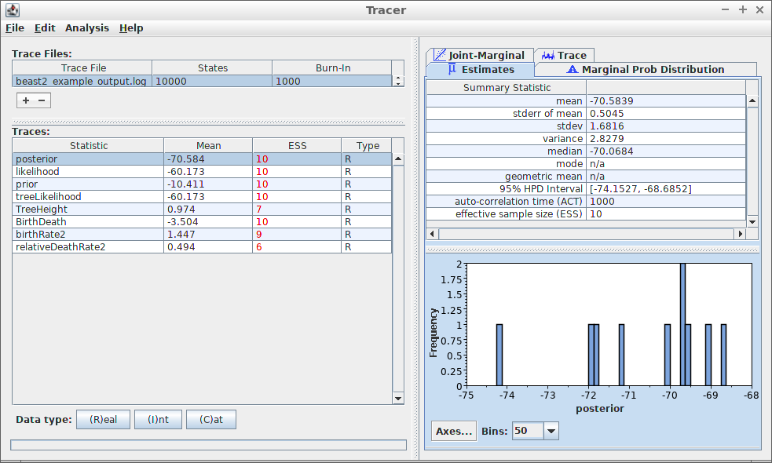
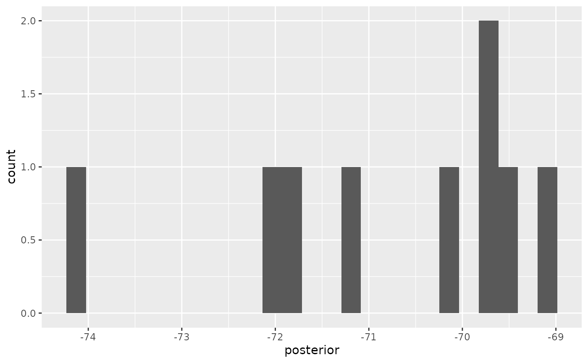
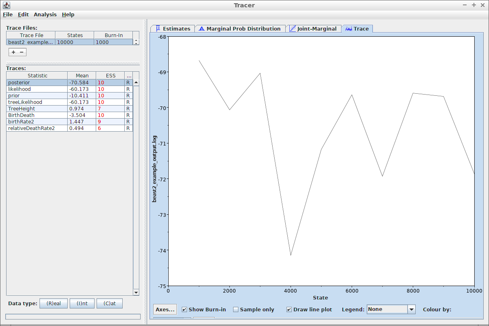
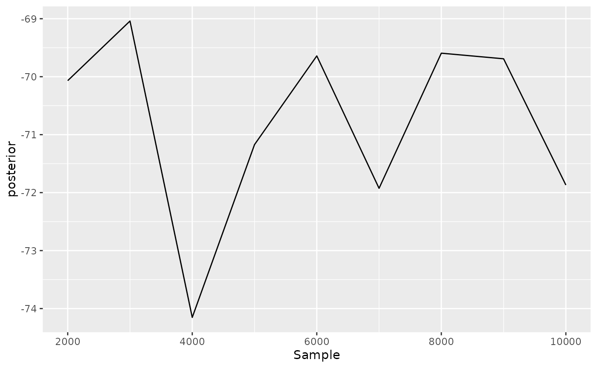
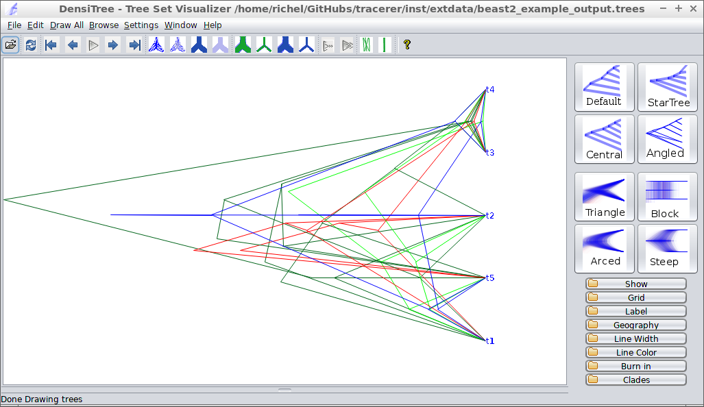

tracerer: ‘Tracer for R’ is an R package that does the same as Tracer does, from within R.
To use tracerer, it needs to be loaded:
When loading beast2_example_output.log in Tracer, the following is displayed:

Tracer output
Most prominently, at the left, the effective sample sizes (ESSes) are shown.
The show the ESSes using tracerer:
estimates <- parse_beast_tracelog_file(
get_tracerer_path("beast2_example_output.log")
)
estimates <- remove_burn_ins(estimates, burn_in_fraction = 0.1)
esses <- calc_esses(estimates, sample_interval = 1000)
table <- t(esses)
colnames(table) <- c("ESS")
knitr::kable(table)| ESS | |
|---|---|
| posterior | 10 |
| likelihood | 10 |
| prior | 10 |
| treeLikelihood | 10 |
| TreeHeight | 7 |
| BirthDeath | 10 |
| birthRate2 | 9 |
| relativeDeathRate2 | 6 |
At the top-right, some measures of the variable posterior is shown. To reproduce these measures in tracerer:
sum_stats <- calc_summary_stats(
estimates$posterior,
sample_interval = 1000
)
table <- t(sum_stats)
colnames(table) <- c("sum_stat")
knitr::kable(table)| sum_stat | |
|---|---|
| mean | -70.58394 |
| stderr_mean | 0.5044887 |
| stdev | 1.681629 |
| variance | 2.827876 |
| median | -69.87976 |
| mode | n/a |
| geom_mean | n/a |
| hpd_interval_low | -74.15268 |
| hpd_interval_high | -68.68523 |
| act | 1000 |
| ess | 10 |
Unlike Tracer, in tracerer all summary statistics can be obtained at once:
sum_stats <- calc_summary_stats(
estimates,
sample_interval = 1000
)
knitr::kable(sum_stats)| mean | stderr_mean | stdev | variance | median | mode | geom_mean | hpd_interval_low | hpd_interval_high | act | ess | |
|---|---|---|---|---|---|---|---|---|---|---|---|
| posterior | -70.5839432 | 0.5044887 | 1.6816291 | 2.8278764 | -69.8797613 | n/a | n/a | -74.1526820 | -68.6852294 | 1000.000 | 10.000000 |
| likelihood | -60.1725009 | 0.3964208 | 1.3214025 | 1.7461047 | -60.0504225 | n/a | n/a | -62.4090389 | -58.7371284 | 1000.000 | 10.000000 |
| prior | -10.4114423 | 0.5424505 | 1.8081684 | 3.2694729 | -10.5950270 | n/a | n/a | -14.1703653 | -7.2820933 | 1000.000 | 10.000000 |
| treeLikelihood | -60.1725009 | 0.3964208 | 1.3214025 | 1.7461047 | -60.0504225 | n/a | n/a | -62.4090389 | -58.7371284 | 1000.000 | 10.000000 |
| TreeHeight | 0.9744748 | 0.1439937 | 0.3916244 | 0.1533697 | 0.8755907 | n/a | 0.91041547166058 | 0.4529637 | 1.8159958 | 1502.121 | 6.657254 |
| BirthDeath | -3.5036870 | 0.5424505 | 1.8081684 | 3.2694729 | -3.6872718 | n/a | n/a | -7.2626100 | -0.3743380 | 1000.000 | 10.000000 |
| birthRate2 | 1.4470488 | 0.2134411 | 0.6713951 | 0.4507714 | 1.4118781 | n/a | 1.28823302868404 | 0.3909076 | 2.8041208 | 1122.942 | 8.905181 |
| relativeDeathRate2 | 0.4937568 | 0.0650235 | 0.1709096 | 0.0292101 | 0.4480670 | n/a | 0.466468860930895 | 0.2496224 | 0.7107459 | 1608.296 | 6.217762 |
At the bottom-right, a histogram of the posterior estimates is shown. To reproduce these measures in tracerer:
ggplot2::ggplot(
data = remove_burn_ins(estimates, burn_in_fraction = 0.1),
ggplot2::aes(posterior)
) + ggplot2::geom_histogram(binwidth = 0.21) +
ggplot2::scale_x_continuous(breaks = seq(-75, -68))
Tracer can also show the trace of each estimated variable:

Tracer shows the trace of the posterior likelihood
Same can be done with tracerer:
ggplot2::ggplot(
data = remove_burn_ins(estimates, burn_in_fraction = 0.1),
ggplot2::aes(x = Sample)
) + ggplot2::geom_line(ggplot2::aes(y = posterior))
tracerer can also use part of DensiTree’s functionality. Here is beast2_example_output.trees displayed by DensiTree:

DensiTree output
The same is achieved in tracerer with:
trees <- parse_beast_trees(
get_tracerer_path("beast2_example_output.trees")
)
phangorn::densiTree(trees, width = 2)